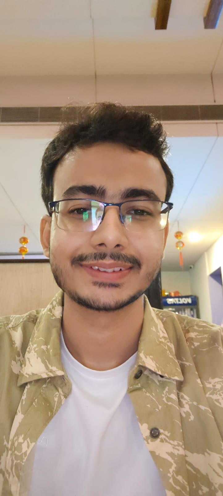

Hi! I'm a Master of Technology student in Computer Science & Engineering at the University of Calcutta where I am advised by Prof. S. K. Setua.
My research interests generally lie in representation learning, verifiable natural language processing, and imitation learning. During my current Master's, I primarily focused on verifiable AI and computational forensics for synthetic media, and during my previous Master's and undergrad, I worked on developing resource-scarce neural networks for computational linguistics and predictive analytics for real-estate datasets.
I previously completed my Master of Science at the University of Calcutta and my Bachelor of Science in Computer Science at The Bhawanipur Education Society College.
Published the core algorithmic framework to PyPI to ensure deterministic, reproducible computational outcomes. Architected pure Python routines for Global Spectral Analysis to mathematically isolate Generative AI origins beyond standard semantic AI limits.
Developed a hybrid verification framework combining local Gemma3 LLM reasoning, semantic tracking, and iterative self-improvement loops to validate factual claims.
Engineered a "Tabula Rasa" dual-path PyTorch research pipeline for extracting and visualizing high-dimensional embeddings. Designed a custom Convolutional Siamese Network utilizing Contrastive Loss.
Engineered an end-to-end behavioral cloning architecture based on the NVIDIA DAVE-2 CNN to learn complex perception-to-control mapping. Developed robust data preprocessing and augmentation engines.
Modeled highly nonlinear relationships within structured real-estate datasets using specialized CatBoost regression, mitigating overfitting through ordered boosting.
Authors: Seal, T., Bhattacharya, A., Das, S., Patra, S., Dawn, D. D., Khan, A., & Setua, S. K.
Published in: Applied Computing for Software and Smart Systems (Proceedings of ACSS 2024). Springer LNNS.
Authors: Bhattacharya, A., Singhania, A. V., Banerjee, P., Majumdar, R., & Bhoumik, D.
Published in: Emerging Technologies in Data Mining and Information Security (Proceedings of IEMIS 2022). Springer LNNS.